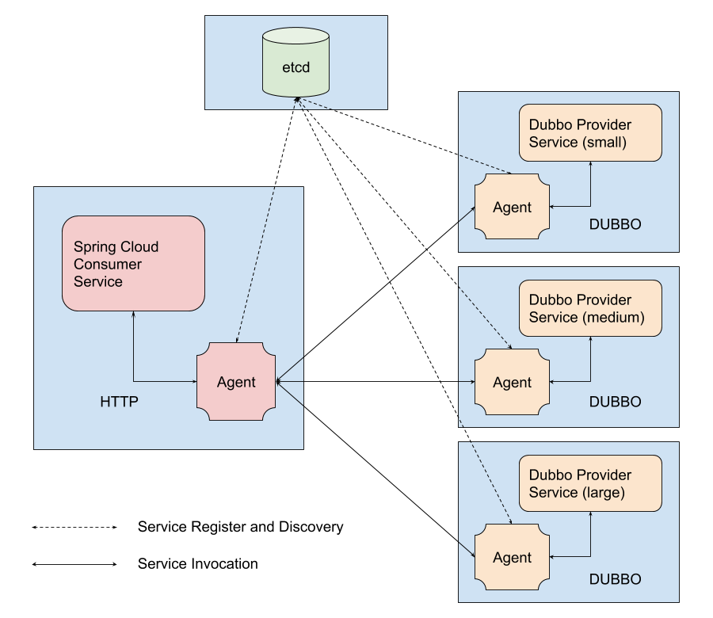

2018年的5月到7月和另外两位同学一起参加了阿里中间件性能挑战赛，比赛分为初赛、复赛和总决赛三个阶段，初赛阶段有3000多支队伍参加，前200名可以进入复赛。这里先把初赛的相关内容整理了一下。
背景
Dubbo
Apache Dubbo是一款开源的高性能Java RPC通信框架。通过它，我们可以非常便捷地在微服务场景下实现服务的注册/发现、RPC通信、负载均衡、服务熔断等功能，因此我们也可以称它为一套完备的服务治理框架。

官方给出的样例中，我们只需要在Consumer和Provider端定义同意的接口，然后在Provider中完成服务的具体实现，几行代码，就可以构建一个分布式服务系统，可谓非常方便。
Service Mesh
Service Mesh是微服务系统实现的一种方式。通过Service Mesh实现服务治理不需要改变服务本身，通过以proxy或sidecar形式部署的Agent，所有进出服务的流量都会被Agent拦截并处理，这样一来微服务场景下的各种服务治理能力都可以通过Agent来完成。
比赛需求
有人将微服务的发展分为3个阶段：
- 初级——将服务发现、负载均衡等技术跟业务逻辑代码封装在一起
- 中级——提供公用库或框架，使得业务逻辑和服务治理功能具有更低的耦合性
- 高级——通过网络代理实现服务治理，代理作为新的独立层完全从业务逻辑中抽离
通过比较发现，Dubbo似乎属于中级解决方案，而Service Mesh则属于高级方案。
初赛的题目就从这里出发，希望实现一个简化版的Agent，用Service Mesh的思想对Dubbo进行改进。主办方希望通过这个方向上的努力，缓解Dubbo的通信和服务治理能力局限在Java领域的问题。
下面这张图片展示了赛题限定的系统架构。共有5个Docker实例，一个etcd服务、一个Consumer端、三个Provider端，其中我们关注的就是其中四个Agent的实现。每个Agent都需要有通信协议解析、转发消息的功能，Consumer端的Agent还需要有负载均衡的功能。

解决方案
处理流程
从Agent的角度看，系统的大致流程如下：
- Consumer Agent实例启动时，会从etcd中读取Service信息，然后就通过Load Balancer进行HTTP Request的预处理和转发，以及接收Provider Agent发送过来的HTTP Response并转发回客户端。Consumer Agent通过event loop来管理所有的连接。
- Provider Agent实例启动时，向etcd注册Service信息，然后就不断获取Consumer Agent发送过来的请求，翻译成Dubbo请求并发送给自己的Dubbo Provider；等待Dubbo Provider返回请求，并翻译为HTTP Response返回给Consumer Agent
- Load balancer在Consumer Agent接受客户端时就固定了一个Provider，通过权重分配的方式，保证了Provider的压力是稳定的
- Consumer Agent与Consumer之间使用TCP通信，与Provider Agent之间使用UDP通信；Provider Agent与Provider之间使用TCP通信
- Consumer Agent在发送请求时，会附送一个唯一的id，这个id将一路发送到Provider，而Provider会将这个id返回给Provider Agent，然后由Provider Agent发送给Consumer Agent，从而Consumer Agent可以确定是哪一个客户端发送的请求
- event loop使用level-triggered模式只监视所有socket的读，而所有的写使用同步写的方式保证延时不会高
负载均衡
负载均衡的实现非常简单，就是根据各个Provider实例的性能进行平均分配。当分配完成后，会以键值对的形式对被分配的输入fd和输出目的地址进行绑定，这样在下一次对相同的输入fd进行负载分配时，就可以直接使用之前的分配结果。
Agent网络通信管理
Consumer Agent中的网络通信使用epoll进行管理。因为Consumer使用HTTP协议与Agent进行通信，在系统运行过程中，会与Agent建立多个网络连接。如果采用老的通信管理模式，就需要为每个连接创建新的线程，线程数太多会对系统效率造成影响。使用epoll对它们进行管理可以避免创建很多线程，降低线程上下文切换开销，提升资源利用率。
最终实现中，Provider Agent与Consumer Agent和Provider的通信都只使用一个稳定的socket连接，因此采用最简单的实现方式（为每个连接创建一个线程进行管理）是最高效的方式。每个线程做的事也非常简单，仅仅是将一个端口接受到的信息转发到另一个端口。
TCP_NODELAY
TCP_NODELAY仅仅是对TCP连接的属性进行了一个简单的设置，就给我们的成绩带来了较大的提升。
默认情况下，TCP通信会使用Nagle算法对传输数据进行优化。TCP/IP协议中，无论发送多少数据，总是要在数据前面加上协议头，同时，对方接收到数据，也需要发送ACK表示确认。为了尽可能的利用网络带宽、提升吞吐量，TCP总是希望尽可能的发送足够大的数据。当即将被发送的数据长度太小且上一个发送的小数据未收到ACK时，Nagle算法会延迟该数据的发送，直到有新的数据到来将它们整合成一个较大的数据包，再进行发送。这样可以避免网络中充斥许多小数据块的情况，以此来提高网络中有效信息的占比。
在我们的实现中，通过设置TCP_NODELAY属性，将Nagle算法关闭，这样小的数据块也会立即被发送到网络中。这么实现虽然牺牲了网络吞吐量，但是提高了QPS，而后者才是我们的直接目标。
Consumer Agent与Provider Agent间采用UDP通信
因为赛题的评估指标是QPS，且并没有要求每个Request都要正确应答，因此尝试将Agent间的TCP通信改为UDP，最终结果有一些提升但是效果不明显。
其他方案
实现过程中也尝试了其他的一些方案，之后有时间也整理一下，看看有没有什么值得放上来的。